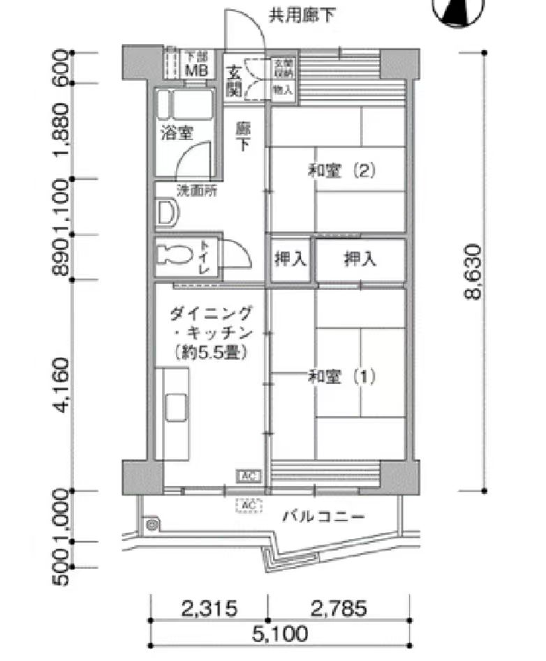

你说一句，AI 做一版——中间它替你定了多少？
今天聊两件事：
AI 到底怎么「生成」东西 · 以及，我现在在做的研究
你想剪一条视频，脑子里那个感觉特别清楚。
可你跟 AI 说的只有一句：
"帮我写个搞笑的短剧本"
它秒出一版。
看着挺完整，读着挺顺。
可你没说的那些，
它已经替你定完了。
我们先搞清楚：它到底替你定了些什么。
一个字一个字，蹦出一整篇。
它手里没有现成答案——不是搜出来的，是当场一个一个算的。
每个候选字都带一个「可能性分数」，按分数抽一个。抽就带运气，所以同一句话问两遍，答得不一样。
你问：介绍一下我们学校
它答：创办于 1958 年，占地 200 亩，在校生 3000 余人
数字是接出来的，不是查出来的
它不确定的时候，默认动作是接着往下写，不是停下来。
所以拿它写实训报告：年份、数字、法条，必须自己核一遍。最后拍板的人只能是你。
上面那张一直在循环演示
纯随机，什么都不是。
每擦一遍问一次：
这更像你说的那句话吗？
这张图世界上原本不存在。
文字是「往下接」，图是「往干净里擦」——两套完全不同的机制。
前面是听得懂人话的翻译官，后面是照着译文动笔的画师——
Qwen-Image 这类新模型，就是把这两半拼在了一起。
| 你说的 | 它替你定的 |
|---|---|
| 帮我做条 招生开场视频 |
时长 30 秒 · 你没说 |
| 16:9 横屏 · 你没说 | |
| 配不配字幕 · 你没说 | |
| 字幕用什么字体 · 你没说 | |
| 片头放不放 logo · 你没说 | |
| 导出 1080p 还是 4K · 你没说 | |
| 存成 MP4 还是 MOV · 你没说 |
你说了 1 行，它自己定了 7 项。这些总得有人定——问题只是由谁定、什么时候定。
「做个小短片，
把你的研究讲一下就行。」
然后就没有然后了。
多长？ 给谁看？
要严肃还是要好玩？
开头放什么？结尾停在哪？
——他没说，我也没问，
因为我根本不知道该问什么。
我不是学影视的。
于是我打开 AI，敲了一句「帮我写个介绍研究的短片脚本」。
三秒出稿，读着挺顺。可我说不清，它到底是不是我想要的那个。
怎么让 AI 更聪明
——那是另一拨人的事
怎么让 AI 更懂你要什么
具体到这个实验，我们在比三种做法：
同一个人，同一天，三个题目，三种做法各走一遍。哪种更像你心里那个，现在真没定论。
这三件事，三种做法谁高谁低，现在都没有答案。
网址：
你今天写的每一句，
都会变成这个研究的一行数据。
〔视频说明待填〕

〔说明待填〕
上一页那个能转着看的 3D，原料就是这种图。